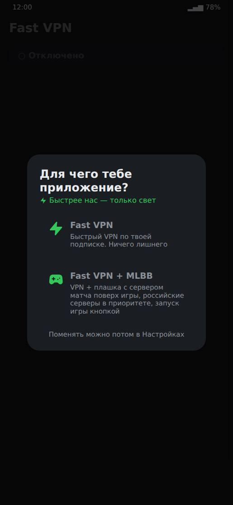
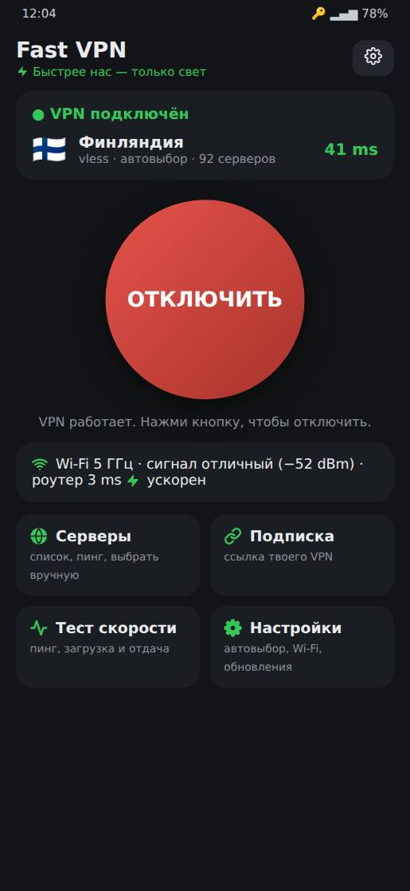
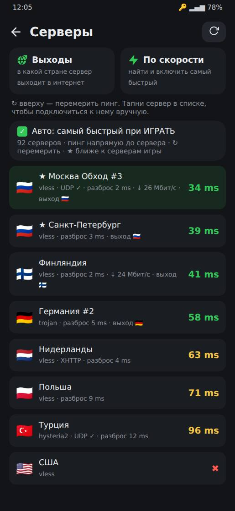
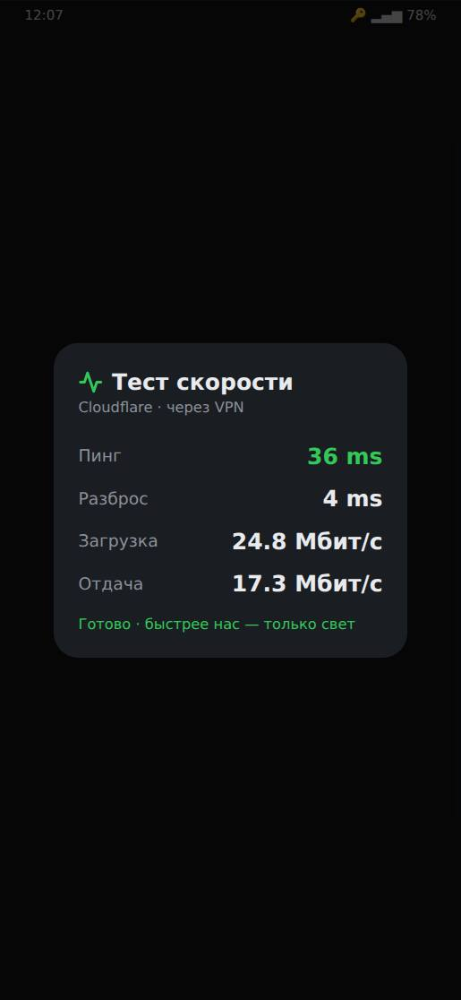
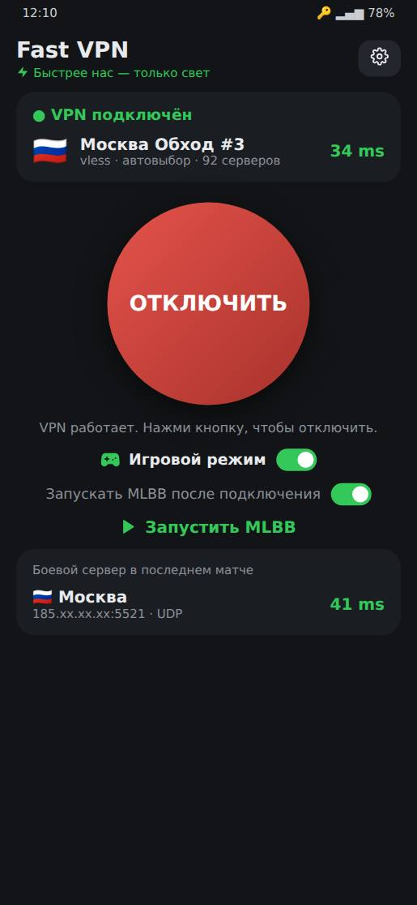
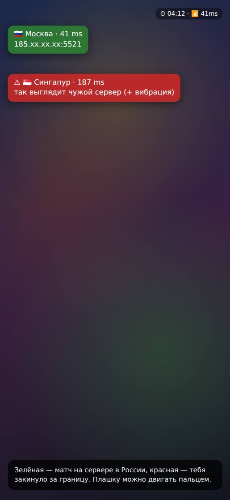

Что это за приложение
Fast VPN — это VPN-клиент для Android. Своих серверов у него нет: ты вставляешь ссылку подписки своего VPN-сервиса (ту же, что используешь в Karing, Hiddify или v2rayNG), а Fast VPN сам выбирает самый быстрый рабочий сервер и подключается к нему.
Что умеет кроме обычного VPN:
- подключается за пару секунд и сам держит рабочий сервер;
- пускает банки, Госуслуги и маркетплейсы мимо VPN, поэтому VPN можно вообще не выключать;
- плитка в шторке, виджет, автоподключение на мобильном интернете;
- отдельный режим для игроков Mobile Legends: плашка с сервером матча поверх игры и запуск игры одной кнопкой.
Быстрый старт
- Скачай и установи файл
fast-vpn.apkсо страницы релизов (подробнее — в разделе «Установка»). - Выбери режим при первом запуске: Fast VPN — просто VPN, или Fast VPN + MLBB — если играешь в Mobile Legends.
- Вставь ссылку подписки: скопируй её в боте или кабинете своего VPN и нажми Вставить ссылку.
- Нажми большую зелёную кнопку ПОДКЛЮЧИТЬ и согласись на запрос Android про VPN. Всё.
Установка
Приложения нет в Google Play, оно ставится файлом.
Скачать последнюю версию- Открой ссылку выше на телефоне и скачай файл
fast-vpn.apkиз раздела «Assets». - Открой скачанный файл. Если телефон скажет, что установка из этого источника запрещена, нажми Настройки и разреши.
- Может появиться окно «Google Play Защита — Рекомендуется проверка приложения». Это нормально: так Google встречает любое приложение не из Play Маркета. Нажми Установить без проверки или Проверить. Не нажимай «Не устанавливать».
Первый запуск
Приложение спросит, для чего оно тебе:
- Fast VPN — просто быстрый VPN. Всё, что связано с игрой, скрыто.
- Fast VPN + MLBB — то же самое, плюс функции для Mobile Legends.
Выбор можно поменять в любой момент: Настройки → «Приложение».
Потом сверху появится зелёная карточка с шагами. Просто иди по ней:
- Добавь подписку — нажми Вставить ссылку. Можно вставить и сами серверы: строки
vless://,trojan://и т. п. - Только в режиме MLBB: скачай базу стран (около 100 МБ, один раз) и разреши плашку поверх игры.
Когда всё готово, карточка исчезает сама.

Главный экран
- Шапка. Название, слоган и шестерёнка — это вход в Настройки.
- Карточка сервера. Статус («Отключено», «Подключаюсь…», «VPN подключён»), флаг, название сервера и его пинг. Жёлтая строка здесь — предупреждение, что подписка скоро кончится.
- Большая кнопка. Зелёная ПОДКЛЮЧИТЬ включает VPN, красная ОТКЛЮЧИТЬ выключает. Под кнопкой написано, что она сейчас сделает.
- Wi-Fi. Диапазон (2.4 или 5 ГГц), сигнал и пинг до роутера. Если Wi-Fi плохой, там появится совет.
- Плитки. Серверы, Подписка, Тест скорости, Настройки. В режиме MLBB есть ещё Лог.

Как работает подключение
Нажал ПОДКЛЮЧИТЬ — приложение сразу подключается к последнему удачному серверу и за секунду проверяет, что он отвечает. Обычно на всё уходит 2–3 секунды.
Полный подбор (пинг до всех серверов, потом скорость лучших) запускается, только когда он нужен:
- сервер не отвечает;
- ты сменил сеть (Wi-Fi ↔ мобильный интернет);
- с прошлого подбора прошло больше 6 часов;
- обновилась подписка.
Подбор идёт, когда VPN уже работает: интернетом можно пользоваться сразу, а прогресс видно в карточке сервера. ОТКЛЮЧИТЬ нажимается в любой момент.
Пока VPN включён, приложение раз в полминуты проверяет сервер. Если он перестал отвечать, приложение само тихо переключится на рабочий. В режиме для игры так не делается: там сервер не меняется никогда, иначе скакал бы пинг.
Экран «Серверы»
Здесь все серверы из подписки. У каждого: флаг, название, протокол, пинг (зелёный — хорошо, жёлтый — так себе, красный — плохо), разброс пинга, а после проверок ещё скорость ↓ N Мбит/с и страна выхода.
- Тап по серверу — подключиться к нему вручную. Автовыбор при этом выключается.
- Долгое нажатие — меню: В избранное или Скрыть. Избранные всегда сверху с жёлтой звёздочкой, и автовыбор берёт их первыми. Скрытые автовыбор не трогает; вернуть их можно кнопкой «Показать скрытые».
- Галочка «Автовыбор сервера» — сервер подбирается сам. Включи её обратно, если выбирал сервер вручную.
- Круглая стрелка вверху — перемерить пинг до всех серверов.
- Выходы — узнать, в какой стране каждый сервер на самом деле выходит в интернет. Это важно для серверов «Обход» и «Мост»: подключаешься к ним в России, а сайты видят тебя, например, из Нидерландов.
- По скорости — замерить скорость через лучшие серверы и включить самый быстрый.
«Выходы» и «По скорости» работают через VPN. Если он выключен, приложение само включит его на время проверки и потом выключит. Идёт окно с прогрессом и кнопкой Стоп, в конце показывается итог.

Подписка
Плитка Подписка на главном экране. Вставь ссылку (кнопка Вставить из буфера) и нажми Сохранить и обновить. Внизу окна видно, сколько серверов, сколько трафика использовано и до какого числа подписка.
- Сама обновляется раз в сутки — ничего нажимать не нужно.
- Предупреждает: за 3 дня до конца срока или когда трафика почти не осталось, придёт уведомление, а на главном экране появится жёлтая строка.
- Если ссылка не открывается напрямую (на мобильном интернете такое бывает), приложение скачает подписку через свой VPN на уже сохранённых серверах.
Настройки
Шестерёнка на главном экране. Всё сохраняется сразу, кнопки «Сохранить» нет. Что касается VPN, применится после переподключения: ОТКЛЮЧИТЬ → ПОДКЛЮЧИТЬ.
| Пункт | Что делает |
|---|---|
| Приложение | Fast VPN или Fast VPN + MLBB. |
| Тема | Тёмная (по умолчанию), Светлая, Неон, AMOLED (чёрная — экономит батарею на AMOLED-экранах). |
| Автовыбор сервера | Сам выбирает самый быстрый рабочий сервер при подключении. |
| Российские сайты напрямую | Банки, Госуслуги, маркетплейсы, Яндекс, VK — мимо VPN. Включено по умолчанию. Подробнее. |
| Блокировать рекламу и трекеры | Рекламные и следящие сайты не загружаются. |
| Приложения через VPN | Все, только выбранные или все, кроме выбранных. Подробнее. |
| Через VPN только игра MLBB | Через VPN идёт только Mobile Legends, всё остальное — напрямую. |
| Матч напрямую MLBB | Трафик самого матча идёт мимо VPN — минимальный пинг. Работает, только если оператор пускает к игровым серверам без VPN. |
| Режим MLBB | Встроенный VPN (рекомендую), Без VPN (только плашка с сервером) или Внешний VPN-клиент. |
| Автоподключение | Включать VPN на мобильном интернете и выключать на Wi-Fi. Подробнее. |
| Ускорение Wi-Fi | Wi-Fi не засыпает между пакетами — меньше скачков пинга. Работает и без VPN. |
| Предупреждение MLBB | Вибрация, если матч попал на сервер не из твоих стран (по умолчанию RU). |
| База стран | Скачать или загрузить файлом базу, по которой определяется страна и город серверов. |
| Обновления | Обновлять автоматически и кнопка «Проверить обновления». |
| Помощь | «Сообщить о проблеме» — подробнее. |
Российские сайты напрямую
Обычно с VPN банк или Госуслуги не открываются, и VPN приходится выключать. Fast VPN решает это сам: сайты в зонах .ru, .рф, .su, банки, Госуслуги, Озон, Wildberries, Авито, Яндекс, VK и другие российские сервисы идут мимо VPN, а всё остальное — через него.
Включено по умолчанию, выключается в Настройках. Определение идёт только по адресам сайтов. Игровые серверы и всё, что подключается напрямую по IP, идёт через VPN как раньше.
Приложения через VPN
Настройки → «Приложения через VPN». Три варианта:
- Все приложения — через VPN идёт весь телефон (по умолчанию).
- Только выбранные — через VPN только отмеченные, например YouTube и Telegram.
- Все, кроме выбранных — отмеченные идут напрямую, например банковское приложение.
Ниже — список приложений с поиском, отмечай галочками. Применится после переподключения VPN.
Плитка в шторке и виджет
Плитка «Fast VPN»
- Опусти шторку уведомлений до конца.
- Нажми карандаш («Изменить»).
- Найди плитку Fast VPN с молнией и перетащи её к остальным.
Нажатие на плитку включает и выключает VPN, а под ней видно сервер.
Виджет на рабочий стол
Долгое нажатие на пустом месте рабочего стола → «Виджеты» → Fast VPN. На виджете статус, сервер с пингом и кнопка Подключить / Отключить.
Автоподключение
Настройки → «Автоподключение».
- Включать на мобильном интернете — ушёл с Wi-Fi, и VPN включился сам. На некоторых телефонах Android не даёт приложению включить VPN в фоне. Тогда придёт уведомление «Ты на мобильном интернете — нажми, чтобы включить».
- Выключать на Wi-Fi — если VPN включился сам, на Wi-Fi он выключится.
Если выключил VPN руками, сам он не включится, пока ты не сменишь сеть.
Тест скорости
Плитка Тест скорости. Меряет пинг, разброс, скорость загрузки и отдачи через серверы Cloudflare. Если VPN включён — через него, если нет — напрямую.
Удобно сравнить: сделай тест без VPN, потом с VPN. Если без VPN тоже медленно, тормозит сам интернет или Wi-Fi, а не VPN.

Для игроков MLBB
Включается выбором Fast VPN + MLBB. На главном экране появляются:
- Игровой режим — переключатель. Включён: российские серверы в приоритете, сервер выбирается один раз до запуска игры и дальше не меняется, работает плашка поверх игры.
- Запускать MLBB после подключения — тогда большая кнопка называется ИГРАТЬ: подключает VPN и сама открывает игру.
- Боевой сервер в последнем матче — где проходил матч и какой был пинг.
- Лог — куда подключалась игра, с выгрузкой в CSV.
Сервер для игры выбирается с выходом в России. Иначе игра решит, что ты за границей, и закинет матч, например, в Лондон.

Плашка поверх игры
Появляется, когда начинается матч. Показывает флаг, город и пинг сервера матча.
- Зелёная — матч на сервере в России (или в твоих странах из настроек).
- Красная — тебя закинуло на зарубежный сервер. Если включено «Предупреждение», телефон ещё и завибрирует.
Плашку можно двигать пальцем в любое место экрана.

Уведомления
- Уведомление VPN висит, пока VPN работает. В нём скорость прямо сейчас (↓ загрузка, ↑ отдача) и сколько трафика ушло за сессию и за сегодня. Кнопка Стоп выключает VPN.
- Подписка — скоро закончится срок или трафик.
- Обновление — вышла новая версия, она уже скачана, нажми, чтобы установить.
- Автоподключение — нажми, чтобы включить VPN на мобильном интернете.
Разреши приложению уведомления, когда оно спросит, иначе ничего этого не увидишь.
Обновления
Раз в несколько часов приложение само проверяет, есть ли новая версия, и скачивает её. Потом приходит уведомление «Обновление Fast VPN скачано — нажми, чтобы установить». Нажимаешь, и открывается обычный установщик Android.
- Проверить вручную: Настройки → Проверить обновления.
- Если пропустил несколько версий, в окне обновления будут изменения каждой по порядку.
- После установки откроется окно «Обновлено до …» с тем, что нового.
- Выключить: Настройки → «Обновлять автоматически».
Чтобы VPN не отключался сам
Xiaomi, Redmi, POCO, Huawei, Honor, Samsung и другие экономят батарею и могут закрывать приложения в фоне вместе с VPN. Один раз настрой так:
- Настройки телефона → Приложения → Fast VPN.
- Контроль активности / Батарея → «Нет ограничений».
- Автозапуск → включить (есть на Xiaomi и Huawei).
- Можно ещё закрепить приложение в списке недавних (замочек), чтобы его не выгружало.
Если что-то не работает
VPN не подключается
Появится окно с причиной. Чаще всего помогает: проверить интернет без VPN, обновить подписку, нажать круглую стрелку в «Серверах» и включить «Автовыбор сервера».
Если в ошибке написано, что Android не дал поднять VPN, значит, у другого VPN-приложения включён «Постоянный VPN». Выключи его: Настройки телефона → Сеть и интернет → VPN → шестерёнка у того приложения.
Подключился, но интернета нет
Значит, сервер подключается, но трафик через него не идёт. Включи «Автовыбор сервера» и переподключись: приложение найдёт рабочий. Или выбери другой сервер вручную в «Серверах».
Банк или Госуслуги не открываются с VPN
Проверь, что в Настройках включено «Российские сайты напрямую», и переподключи VPN. Если у банка не российский адрес сайта, добавь приложение банка в «Приложения через VPN» → «Все, кроме выбранных».
Подписка не обновляется
- Ошибка про устройства (device, HWID, limit): удали старое устройство в боте или кабинете своего VPN или увеличь лимит.
- «Пускает только с российских адресов» — смотри раздел «Подписка».
- Можно вставить в «Подписку» не ссылку, а сами серверы (строки
vless://,trojan://…).
Медленно работает
Сделай тест скорости без VPN и с VPN. Если без VPN тоже медленно — дело в интернете или Wi-Fi: подойди к роутеру, переключись на 5 ГГц. Если медленно только с VPN — в «Серверах» нажми По скорости.
Большой пинг в игре
Убедись, что включён «Игровой режим» и у выбранного сервера выход в России (кнопка Выходы в «Серверах»). Попробуй «Матч напрямую», если оператор пускает. На Wi-Fi включи «Ускорение Wi-Fi».
VPN сам отключается
Это прошивка закрывает приложение в фоне. Сделай настройки из раздела «Чтобы VPN не отключался». Ещё VPN отключается, если включить другое VPN-приложение: Android держит только один VPN.
Автоподключение не включает VPN
На части телефонов Android не даёт включить VPN в фоне. Тогда приходит уведомление с кнопкой — нажми её. Проверь, что уведомления приложению разрешены.
«Выходы» показывают у всех одну страну
Это было в старых версиях. Обнови приложение и нажми Выходы ещё раз.
Приложение вылетело
При следующем запуске появится окно «Прошлый запуск упал» с текстом ошибки. Нажми Скопировать и отправь разработчику, или воспользуйся «Сообщить о проблеме».
Сообщить о проблеме
Настройки → «Помощь» → Сообщить о проблеме. Приложение соберёт отчёт файлом: версия, телефон, настройки, замеры серверов, последнее падение и полный журнал — каждое нажатие, подключение и ошибка с точным временем. Нажми Отправить и выбери, куда отправить разработчику: Telegram, почта, что угодно. Или Скопировать и вставь в сообщение.
В отчёте нет ссылки подписки, адресов серверов и паролей. В журнале VPN могут встречаться адреса сайтов, которые открывались.
Словарик
- VPN
- Защищённый «туннель»: телефон ходит в интернет через другой компьютер — сервер. Сайты видят адрес сервера, а не твой.
- Подписка
- Ссылка от твоего VPN-сервиса, в которой лежит список его серверов. Её выдают в боте или личном кабинете.
- Сервер
- Компьютер VPN-сервиса, через который идёт трафик. У разных серверов разные страны, скорость и пинг.
- Пинг
- За сколько миллисекунд (ms) сигнал доходит до сервера и обратно. Меньше — лучше. До 60 ms — отлично, 60–100 — нормально, больше 100 — заметно в играх.
- Разброс
- Насколько пинг скачет. Чем меньше, тем стабильнее.
- Выход
- Страна, из которой сервер на самом деле выходит в интернет. Подключиться можно к серверу в России, а выйти через Нидерланды.
- Мбит/с
- Скорость интернета. Для видео в хорошем качестве хватает 10–20 Мбит/с, для игр важнее пинг.